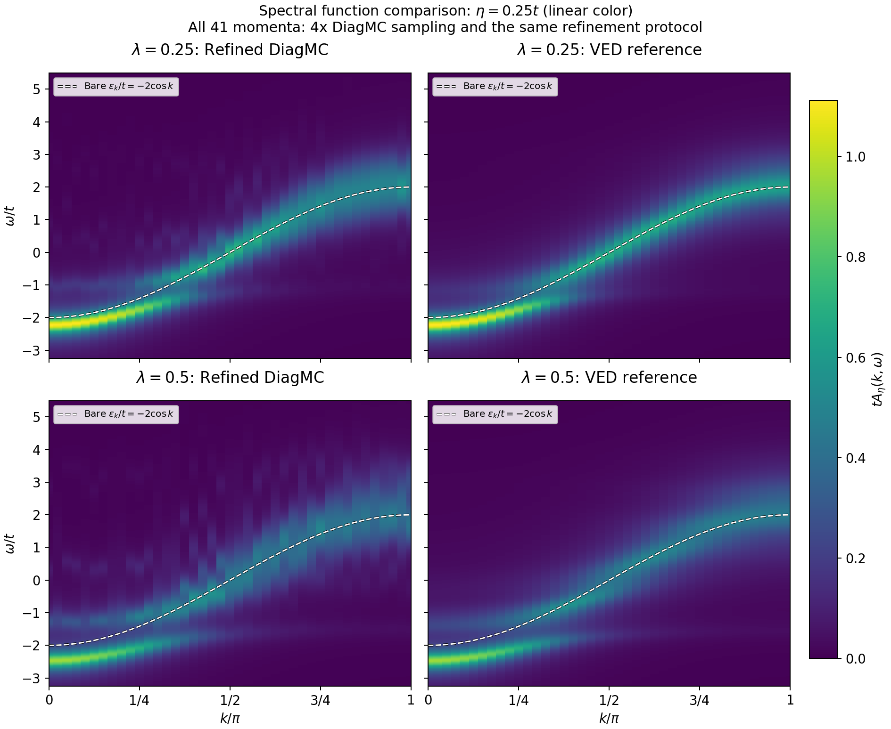
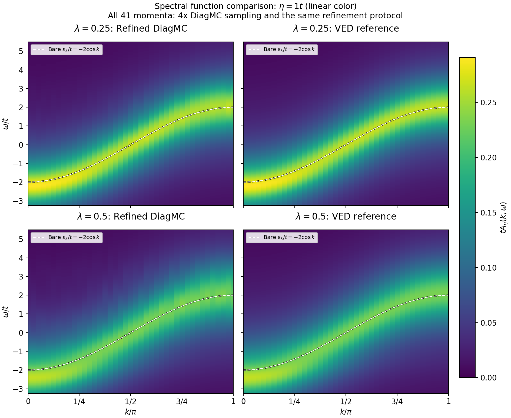
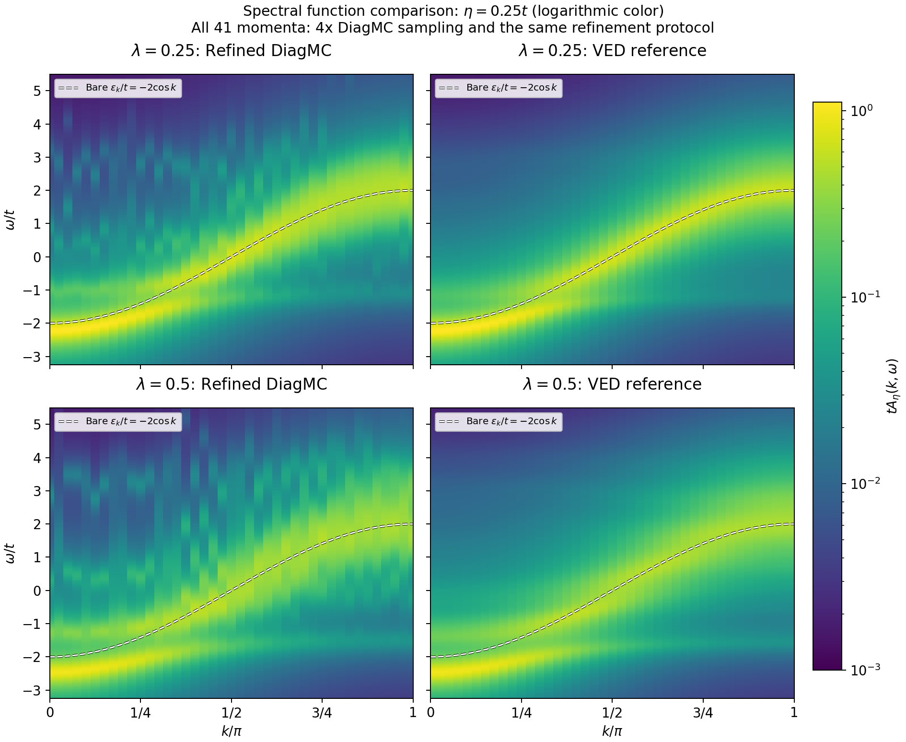
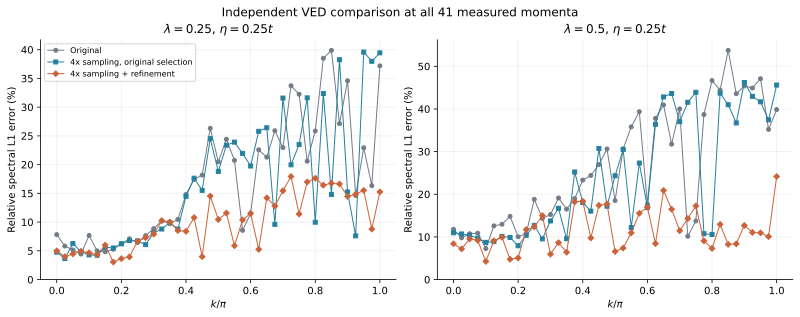
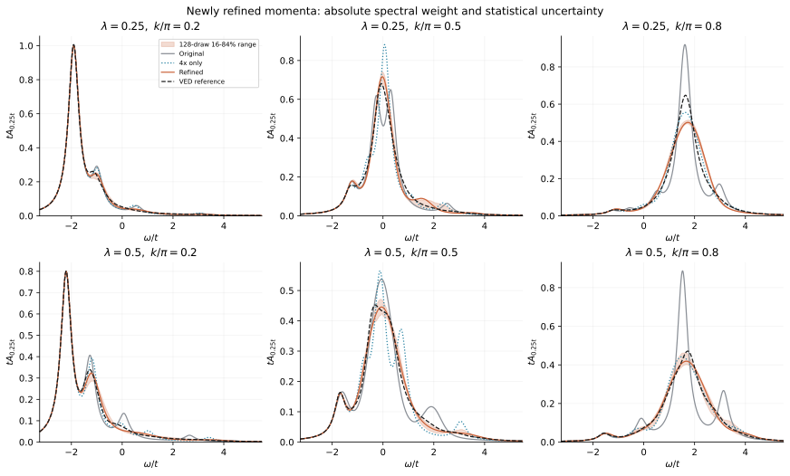
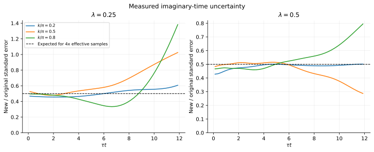
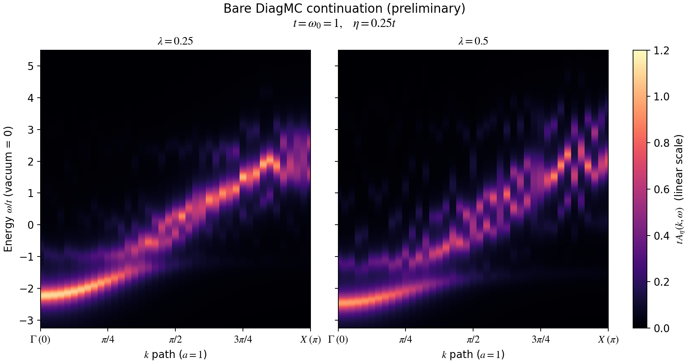
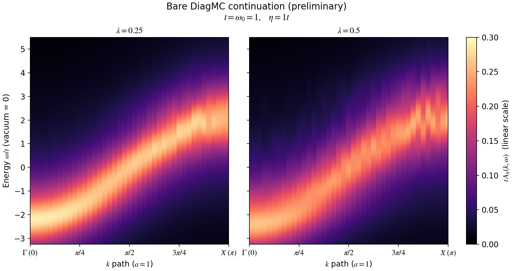
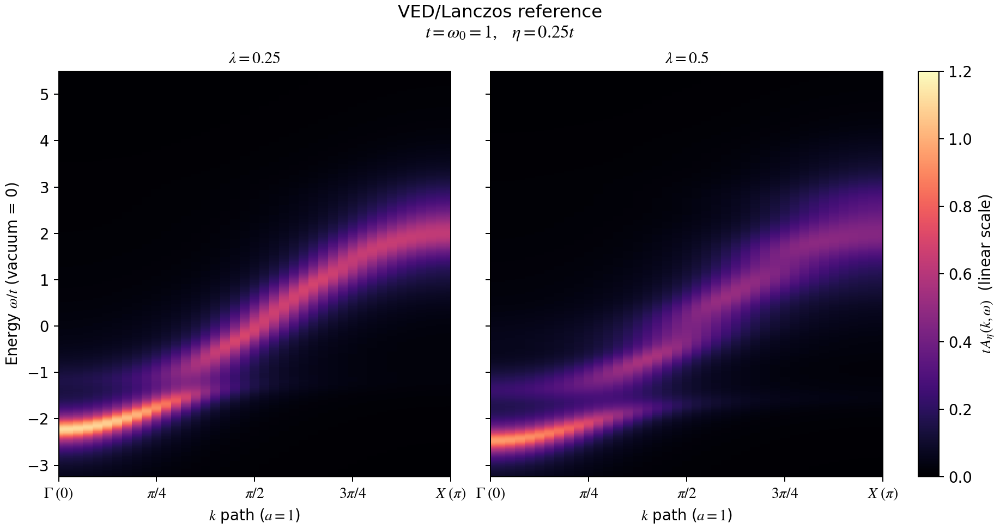
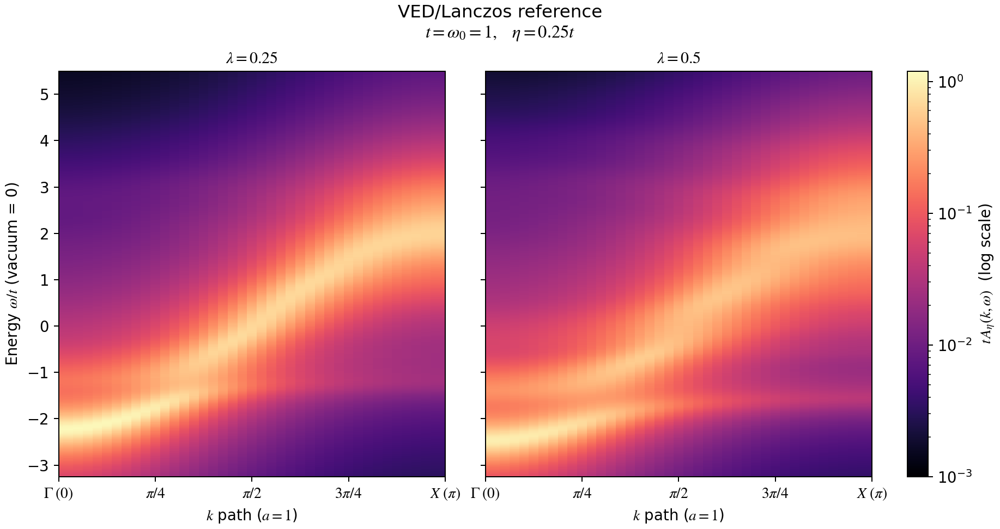

DiagMC results and validation · Theory and Feynman diagrams
1D Holstein Spectra: DiagMC and VED
Zero temperature, one electron, infinite lattice; , . Updated: 2026-09-19.
All 41 momenta in the main maps now use refined spectral functions, displayed beside VED. Every point at both couplings uses four times the sampling, the same continuation-selection rules, and 128 bootstrap replicates.
Improvements and resolution tests · Download comparison data · Original maps and pilot records.
Updated DiagMC and VED: η=0.25t
Each row fixes the coupling; updated DiagMC is on the left and independent VED on the right. All four panels share the absolute intensity scale , the same 41-point momentum grid, energy zero, energy window and broadening. Columns retain their computed values, without momentum interpolation or individual normalization.
The dashed curve in each of the three main comparison maps is the bare-electron dispersion , with the same vacuum energy origin as the spectrum. This reference does not enter spectral fitting.

{kind=link}
{kind=link}
Quantitative accuracy of fine, narrow peaks remains unvalidated in general. All points use the same refinement protocol. Local narrow peaks, peak widths and differences between columns must still be assessed with the uncertainty estimates and synthetic-spectrum tests below.
Comparison at coarser broadening: η=t

{kind=link}
{kind=link}
Both sides use the same coarser broadening. Only display broadening changes; the spectral weights are unchanged. A smoother spectrum does not establish the physical width of an individual sideband.
Logarithmic color scale: comparing weaker spectral weight

{kind=link}
{kind=link}
Data and broadening are unchanged from the main map; only the color mapping changes. The four panels share a logarithmic scale whose tick labels still denote spectral intensity, with a lower bound of . Weak colors also include Lorentzian tails and cannot all be interpreted as new excitations.
Refined results across all 41 momenta
Every momentum at both couplings has completed the same refinement protocol on Kestrel. The ten pilot momenta were reused after file-hash verification. Completing the remaining 31 added 496 independent chains and 23.808 billion production steps. The full grid contains 656 chains and 31.488 billion production steps: eight chains per coupling/momentum, each with 48 million production steps, four times the original sampling per point.
The sampling kernel is unchanged. Fourteen continuation settings use the same independent-chain held-out scores to compare time ranges, time/frequency grids, covariance cutoffs, spectral support, blocking and maximum entropy. All points use the same selection rules, although their final spectral representations may differ. Median pointwise ratios of propagator statistical errors are 50.1% and 49.7% for λ=0.25 and 0.5, respectively.
| λ | Original median | Median with 4× sampling only | Refined median | Original maximum | Refined maximum |
|---|---|---|---|---|---|
| 0.25 | 16.3% | 14.8% | 10.2% | 39.9% | 17.9% |
| 0.5 | 23.3% | 17.2% | 10.1% | 53.7% | 24.2% |
Errors decrease in 70 of the 82 coupling/momentum pairs and increase in 12; every fit is retained. "4× sampling only" keeps the original continuation and minimum-mean held-out-score selection. "Refined" uses frozen rules and a one-standard-error choice favoring stronger regularization. This is a model-selection heuristic, not a significance test. VED enters neither fitting nor selection: results are frozen and hashed before comparison. The table covers the full spectrum, including the ground-state contribution, and is not a pointwise frequency-error bound.

{kind=link}
{kind=link}

{kind=link}
{kind=link}
Uncertainty intervals at every momentum
Each coupling/momentum has 128 completed block-bootstrap replicates: 10,496 in total, with no final failed samples. Each replicate resamples groups of 16 raw blocks within each chain and reselects regularization within a fixed spectral representation. A total of 21 numerical nonconvergences were retried with the same random samples and selected parameters: three from the pilot and 18 from this round. Original failed outputs and retry records remain in the reproduction archives; central spectra and previously successful samples are unchanged.
Two retries use a more stable Newton linear solve and objective-difference evaluation, keeping the original objective, sample and regularization parameter. This numerical implementation passed checks against three known analytic solutions and previously converged real samples. Numerical recovery and validation record.
Shading denotes empirical 16–84% quantile intervals. Full data also include 2.5–97.5% intervals and variation among acceptable spectral representations. These intervals do not capture all analytic-continuation bias. Applying the same refinement protocol everywhere does not establish quantitative accuracy for every narrow peak.
Show propagator statistical errors at newly completed momenta

{kind=link}
{kind=link}
Limitations established by the existing resolution tests
The pilot's 36 synthetic spectra and 864 recovery tests at six coupling/momentum pairs are reused unchanged and verified by hashes; they were not extended to all momenta. For example, at and , neither coupling recovered known doublets separated by (0/24 each). Fine narrow peaks therefore remain unvalidated in general, and detailed differences between neighboring columns cannot directly establish new physical excitations.
Pilot resolution plots and synthetic-spectrum examples · All pointwise errors and diagnostic summary · Jobs and completion records for this round · Scientific source and reproduction instructions · Complete computational report.
Definitions of the spectral function and broadening
Colors represent dimensionless . is the Lorentzian half width at half maximum; the main η=0.25t map has full width . This controls display resolution and is not the polaron's physical decay rate. The finite plotting window omits some spectral weight and Lorentzian tails, so column integrals within the window are not forced to 1.
Numerical checks of the VED reference
The variational space follows the infinite-lattice basis construction of Bonča et al. A finite space represents the continuum by discrete poles, summed with the same broadening; see Bonča, Trugman and Batistić (1999). VED uses 16 generations. Generations 14 and 16 are compared at all 41 momenta; generations 16 and 18 are compared at the five momenta .
| λ | Generations 14→16, 41 points | Generations 16→18, 5 points | Lanczos steps 400→800, checked points |
|---|---|---|---|
| 0.25 | 0.102% | 0.025% | 1.75e-12 |
| 0.5 | 0.096% | 0.037% | 3.25e-11 |
Lanczos does not store all vectors for reorthogonalization. At the five momenta above, 800 steps check the 400-step results in each variational space. These differences support reference-map stability at the stated broadening, but are not rigorous error bounds against the infinite-basis solution and do not guarantee finer structure at narrower broadening.
All calculations check the first three unbroadened spectral moments; the largest absolute residual is 1.20e-14. Higher moments after Lorentzian broadening are not used in this test.
Comparison data and reproduction
Paired data for the current main maps: λ=0.25, DiagMC and VED · λ=0.5, DiagMC and VED.
In the NPZ files, A contains updated DiagMC, and A_ved contains VED on the same grid and with the same broadening. Both have shape (3,41,701), with axes (eta,k,energy) and broadenings [0.25,0.5,1.0].
refined_mask is true everywhere, and source_per_k marks every point as refined.
bootstrap_16 and bootstrap_84 store empirical quantiles. All points have 128 resamples; their counts are stored in bootstrap_replicates.
Data provenance, column checks and shared color-scale record · Comparison-plot generation script.
Refined computational data for all 41 points
Full spectra and uncertainties: λ=0.25 · λ=0.5. Spectra at each processing stage have shape (3,41,701), and bootstrap quantile arrays have shape (4,3,41,701). Original, increased-sampling-only, refined and VED spectra are retained, together with variation across representations.
Complete reproduction archives: source, all 656 raw chains, bootstrap samples and diagnostics · Archive locations, sizes and SHA-256 hashes · Independent extraction and reproduction checks.
Audit of all raw chains · Fit-freeze record · Run-source hashes · Verification of reused pilot files.
Complete VED reference
- λ=0.25: Complete NPZ · η=0.25t CSV (gzip)
- λ=0.5: Complete NPZ · η=0.25t CSV (gzip)
In the NPZ files, A has axis order (eta, k, energy), broadenings [0.15, 0.25, 0.5, 1.0], and shape per broadening (41, 701). CSV rows contain k, k/π, ω/t, tA; exported at .
Full reference-validation JSON · Historical 17-point job records · VED reference source, poles and spectral-map data.
Original maps and pilot records
Expand the earlier ten-point pilot, resolution tests and reproduction records
Earlier error-refinement pilot: ten momenta
Fourfold sampling and continuation refinement have finished on Kestrel. The following momenta were chosen at each coupling to cover problem regions and their neighbors, with zero momentum as a control:
Each point has eight new chains of 48 million production steps each. Across both couplings, this adds 160 chains and 7.68 billion steps. The sampling kernel is identical to that of the 41-point baseline.
At both couplings, typical propagator statistical errors fall to about 51% of their original values. Increasing the block length from 4 to 16 gives pointwise median standard-error ratios of 0.95–1.03, without systematic growth. Fourteen reconstruction settings are compared on the same held-out data and scoring criteria, covering time range/resolution, frequency grids, covariance cutoffs, spectral support, blocking and maximum entropy. Several problem points benefit from previously unused data at .
| λ | Original median | Median with 4× sampling only | Refined median | Original maximum | Refined maximum |
|---|---|---|---|---|---|
| 0.25 | 21.9% | 26.1% | 14.3% | 37.2% | 16.6% |
| 0.5 | 40.4% | 39.6% | 11.0% | 47.1% | 24.2% |
Errors decrease in 18 of the 20 coupling/momentum pairs and increase slightly in two. "4× sampling only" retains the original continuation and minimum-mean held-out-score selection; "Refined" uses frozen reconstruction settings and a one-standard-error choice favoring stronger regularization. This is a model-selection heuristic, not a significance test. VED is read only after freezing and hashing the protocol, and is not used for fitting, selection or replacement. This table covers the ten-point pilot, not the entire 41-point main map.

{kind=link}

{kind=link}
Uncertainty and resolution
Each pair has 128 completed block-bootstrap replicates, 2,560 in total, with regularization reselected within a fixed spectral representation. Three initial maximum-entropy solves did not converge; numerical retries used the same samples and selected parameters while central spectra remained frozen. The original failure and retry records are retained. Shading shows empirical 16–84% quantile intervals; downloads also include 2.5–97.5% intervals and differences among acceptable spectral representations. These intervals do not include all spectral-model bias. All 864 additional recovery tests have completed: 36 synthetic-spectrum cases, each with 24 independent noise realizations.

{kind=link}
Quantitative accuracy of fine, narrow peaks remains unvalidated in general. For example, synthetic tests at and fail to recover doublets separated by at either coupling (0/24 each). Broad continua can also produce spurious peaks. "n/a" means that the known true spectrum itself fails the doublet criterion at the display broadening. Recovery rates apply only to these synthetic spectra and the measured noise covariance; 24 realizations do not establish a general resolution guarantee.
Propagator-error reduction and synthetic-spectrum examples

{kind=link}

{kind=link}
Pointwise errors and synthetic recovery rates · Blocking, interchain and covariance diagnostics · Completed job records · Source for review and reproduction instructions · Complete pilot record.
Pilot NPZ files: λ=0.25 · λ=0.5. Spectrum arrays at each processing stage have shape (3,10,701), with axes (eta,k,energy); actual momentum indices are retained, without filling unmeasured momenta.
Complete reproduction archives: Source, diagnostics, synthetic spectra and report · All bootstrap samples · λ=0.25 raw chains · λ=0.5 raw chains · Sizes and SHA-256 hashes · Independent archive verification.
For background on model selection, see Schumm et al. on cross-validation for analytic continuation. This round adds a maximum-entropy comparison. The original 41-point maps are retained in the historical records below.
Expand the original 41-point DiagMC maps, independent VED and sampling records
Previous 41-point calculation
The denser 41-point DiagMC calculation on the same grid as VED has finished on Kestrel, including sampling, spectral continuation and pointwise checks.
Nine exactly overlapping momenta were reused and the remaining 32 were calculated, adding 256 independent chains across both couplings, each with 24 million production steps. The completed 41-point grid uses 328 chains and 7.872 billion production steps, including 6.144 billion added in that round. Raw-file hashes of all 72 reused chains were checked individually.
Kestrel sampling job 18674189 and postprocessing job 18674190 are both COMPLETED with exit code 0:0. Completed job records · Actual momentum grid and reuse records · Checks at all 41 points.
Baseline 41-point DiagMC maps: η=0.25t
Default parameters are and , along . The 41 momenta are sampled and continued independently, without momentum interpolation. The horizontal axis is , the vertical axis is vacuum-referenced , and both panels share the scale .

{kind=link}
{kind=link}
Some peaks at intermediate and high momenta are unstable between neighboring columns and cannot establish new physical excitations. Generating the maps does not establish quantitative accuracy for these narrow peaks; the original reconstruction differences are retained.
The same data with a logarithmic color scale (SVG) · PDF.
{kind=link}
Coarser resolution: η=t

{kind=link}
{kind=link}
Only display broadening is increased; the original data are neither refitted nor replaced. Smoother overall spectra cannot determine individual phonon-sideband widths.
Completed accuracy checks
All 41 momenta are compared pointwise with VED using identical momentum arrays, energy grids, plotting windows and broadenings, without interpolating the reference. The table gives relative integrated error ranges across all 41 points for the full spectrum:
| λ | η=0.25t | η=t | Maximum held-out prediction score |
|---|---|---|---|
| 0.25 | 4.4%–39.9% | 0.4%–3.5% | 107.7 |
| 0.5 | 7.2%–53.7% | 0.9%–5.9% | 47.9 |
This error includes the ground-state peak and must not be confused with the results page's "incoherent-spectrum error", which removes that peak. Some held-out prediction scores remain high, indicating a need to improve statistics or covariance estimation. At λ=0.25 and 0.5, respectively, eight and ten selected regularization parameters lie at scan boundaries. The 41-point comparison does not establish full momentum-grid convergence or pointwise frequency-error bounds.
Raw block counts, source code and input hashes have been checked. All 328 chains completed with distinct seeds and zero rejections at the order cap. The maximum absolute residual of unbroadened is 9.35e-10. The NPZ retains empirical 16–84% intervals from eight block-bootstrap replicates; these do not include all spectral parametrization bias.
Full validation JSON · Spectral-continuation provenance · Kestrel runtime environment · Source, propagator blocks, logs and spectral maps for this round.
Raw chain files are split by coupling and momentum index. For the complete audit, extract them alongside the main archive:
- λ=0.25: k indices 0–19 · 20–40.
- λ=0.5: k indices 0–19 · 20–40.
Archive sizes and SHA-256 hashes. The VED/Lanczos reference is in the reference archive; extract it as well to reproduce the complete audit.
- DiagMC, λ=0.25: NPZ with bootstrap intervals · Main-map CSV (gzip)
- DiagMC, λ=0.5: NPZ with bootstrap intervals · Main-map CSV (gzip)
In the DiagMC NPZ, A has shape (3, 41, 701), with axes (eta, k, energy), with broadenings [0.25, 0.5, 1.0].
Earlier 17-point results and Anvil submission records
Main 17-point archive · λ=0.25 raw chains · λ=0.5 raw chains · 17-point checks. The earlier Anvil 41-point submission record and submitted source remain as historical records; the completed results here come from Kestrel.
Independent VED reference: comparison at matched broadening
Each coupling is calculated independently at 41 uniformly spaced momenta over . All momenta share the vacuum energy zero and both panels share a color scale. There is no per-momentum normalization or column-dependent energy shift. Color cells correspond directly to computed momenta, without smoothing interpolation along momentum.

{kind=link}
{kind=link}
Logarithmic color scale: inspecting weaker spectral weight

{kind=link}
{kind=link}
Sampling and postprocessing complete
Kestrel sampling job 18674189 and postprocessing job 18674190 completed successfully in the short-stdby partition. Each coupling/momentum has four independent chains of 24 million production steps each. Nine overlapping momenta reuse earlier data; the remaining 32 were independently sampled in this round. Preflight C++ kernel checks, 12 Python tests, and analytic free-limit, atomic-limit and first-order-truncation comparisons all passed. Nodes, elapsed times and resource records are in the completed-job records above.
Continuation over the full momentum path uses exact time-bin-integrated kernels, covariance, unbroadened spectral moments and independent-chain cross-validation. It does not impose an isolated ground-state pole at every momentum or use VED spectra as input. The spectra remain preliminary.